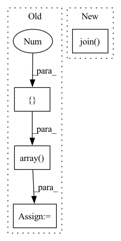

Pattern ID :35759

Before Change
def plot_throughput():
x = np.array([2, 4, 8, 16, 32, 64])
y = np.array([1582.04, 3004.51, 5805.14, 11273.57, 19496.10, 33080.03])
plt.figure(figsize=(7, 4))
plt.plot(x, y, color="blue", marker="o")
plt.xticks(x)
After Change
plt.ylabel("Training Throughput (images/sec)")
plt.grid(True)
plt.tight_layout()
plt.savefig(os.path.join("figures/", outdir, "training_throughput.pdf"))
plt.savefig(os.path.join("figures/", outdir, "training_throughput.png"))
plt.show()
In pattern: SUPERPATTERN
Frequency: 4
Non-data size: 4
Instances
Fragment ID: 101734416
Project Name: richardkxu/distributed-pytorch
Commit Name: 0fd99501648d7a909f37466a76f2312017831801
Time: 2020-05-02
Author: richardkxu@gmail.com
File Name: plot.py
M Class Name: AnonimousClass
N Class Name: AnonimousClass
M Method Name: plot_throughput(3)
N Method Name: plot_throughput(0)
M Parent Class:
N Parent Class:
M File Name: plot.py
N File Name: plot.py
M Start Line: 8
M End Line: 20
N Start Line: 7
N End Line: 18
'>
Before Change
// )
// )
x = ivy.native_array([[1., 2.], [4., 5.],[7., 8.]])
y = ivy.array([[1.], [0.], [0.]])
z = ivy.cross(x, y, axis=0)
print(x.shape[-1], x.shape[-1])
print(z)
After Change
if not success:
warnings.warn(
"the following methods had failing docstrings:\n\n{}".format(
"\n".join(failures)
)
)
'>
Fragment ID: 101734405
Project Name: ivy-dl/ivy
Commit Name: ce5cfa2e3aee5a1eef217f32ab100476508e62f8
Time: 2022-06-26
Author: rishabhkkumarsc1@gmail.com
File Name: ivy_tests/test_docstrings.py
M Class Name: AnonimousClass
N Class Name: AnonimousClass
M Method Name: test_docstrings(1)
N Method Name: test_docstrings(1)
M Parent Class:
N Parent Class:
M File Name: ivy_tests/test_docstrings.py
N File Name: ivy_tests/test_docstrings.py
M Start Line: 52
M End Line: 56
N Start Line: 17
N End Line: 56
'>
Before Change
def plot_training_time():
x = np.array([2, 4, 8, 16, 32, 64])
y = np.array([74211.11, 39536, 20904.01, 10969.42, 6652.91, 4071.31])
plt.figure(figsize=(7, 4))
plt.plot(x, y, color="blue", marker="o")
After Change
plt.ylabel("Training Time (secs)")
plt.grid(True)
plt.tight_layout()
plt.savefig(os.path.join("figures", outdir, "training_time.pdf"))
plt.savefig(os.path.join("figures", outdir, "training_time.png"))
plt.show()
'>
Fragment ID: 101734427
Project Name: richardkxu/distributed-pytorch
Commit Name: 0fd99501648d7a909f37466a76f2312017831801
Time: 2020-05-02
Author: richardkxu@gmail.com
File Name: plot.py
M Class Name: AnonimousClass
N Class Name: AnonimousClass
M Method Name: plot_training_time(3)
N Method Name: plot_training_time(0)
M Parent Class:
N Parent Class:
M File Name: plot.py
N File Name: plot.py
M Start Line: 25
M End Line: 37
N Start Line: 22
N End Line: 33